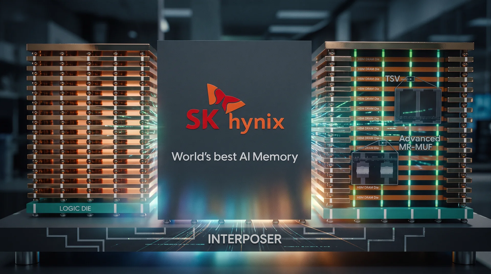
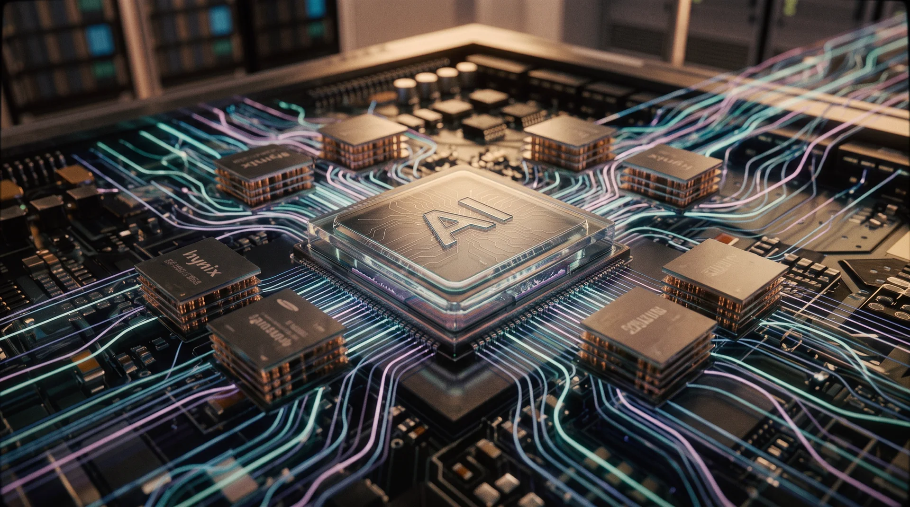
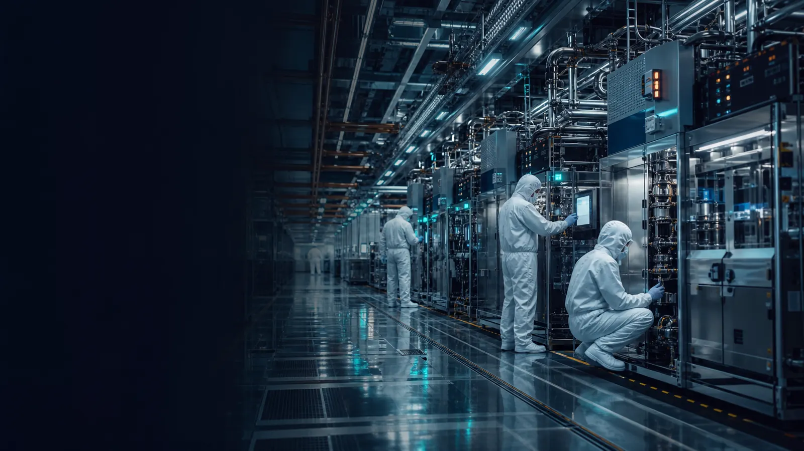
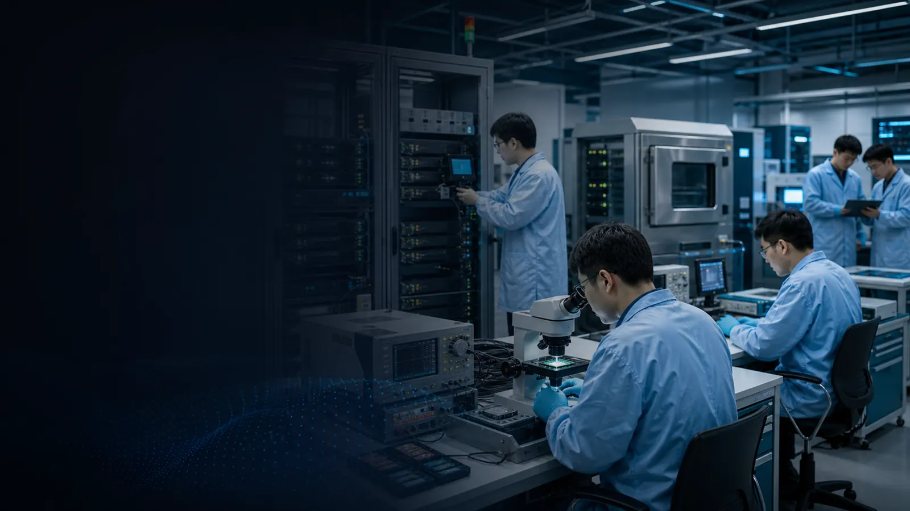
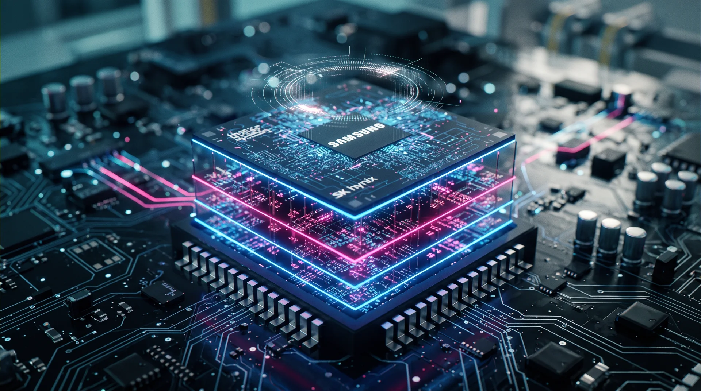

01 · SYSTEM ADVANTAGE
AI 메모리 경쟁은
AI 메모리 경쟁은
시스템 실행력으로 이동
HBM 다이, 로직 베이스 다이, 인터포저, 적층 수율을 하나의 시스템으로 판단. 개별 제품 성능보다 고객 인증과 양산 안정성이 우선.
HBM4Base dieAdvanced packaging
Executive memory intelligence
가격·수요·중국 경쟁 신호를 연결해 경영전략과 의사결정의 우선순위를 선명하게 제시합니다.
C-level strategy council · evidence only
Executive decision · historical backtest · actual evidence
China business · strategy formulation · evidence based
China business · strategic decision · evidence based
장기계약, 인증 지원, 제품 번들을 하나의 협상안으로 설계
01 / 07
HBM 다이, 로직 베이스 다이, 인터포저, 적층 수율을 하나의 시스템으로 판단. 개별 제품 성능보다 고객 인증과 양산 안정성이 우선.
패키징 할당, 전력과 냉각, 고객별 램프 일정이 실제 출하 상한을 결정. 수요 전망은 병목 해소 시점과 함께 검토.
HBM·서버 DRAM은 인증과 고객 배분 중심으로 운영. 범용 DRAM·NAND는 Spot/Contract 스프레드와 중국 캐파 신호로 가격 하방을 방어.
캐파 선배분, 장기 고객 확보, 수율 개선을 기본안으로 설정. 가격·인증·정책 KPI가 임계치를 벗어날 때만 투자 속도와 제품 믹스를 전환.
Policy maker direction · China / Korea / United States

가속기 HBM, 호스트 서버 DRAM, 데이터센터 eSSD, 메모리 확장 계층이 함께 움직임. 제품별 수요를 분리하되 하나의 시스템 용량으로 검토.
학습은 대역폭과 대용량 적층, 추론은 지연시간·전력·비용 효율이 중요. 워크로드 믹스 변화가 HBM 세대와 서버 DRAM·eSSD 구성을 결정.
하이퍼스케일러, 엔터프라이즈, 국가 AI 인프라, 엣지는 도입 속도와 메모리 구성이 다름. 고객 인증과 실제 발주를 수요 전망보다 우선 확인.
검증된 고객 주문, 패키징 여력, 가격 스프레드, 중국 공급 신호를 함께 반영. HBM·서버 DRAM·eSSD의 캐파 배분과 범용 제품 방어 수준을 조정.
China fab expansion infrastructure · policy and utility evidence
China workforce strategy · scenario tabs · lawful hiring


장비 PM·utility·EHS 인력은 상시 풀로 확보하되 recipe·수율 데이터는 역할별 최소 권한으로 통제합니다.
BIS 원문 ↗TrendForce memory price board
| 품목 | 가격표 | 기준점 가격 | 최신 가격 | 실제 변화 | 관측 기간 | Trend |
|---|
영어권 / 중국어 기사 스트림
Community · Hiring
China NAND business strengthening
중국 반도체 흐름 요약
Talent and hiring early warning
Interactive quantitative analysis
SKHY product projection · evidence based
Memory demand forecast · scenario planning
Dynamic intelligence workbench
Competitive Dynamics · Money Flow

메모리 다이, 파운드리, 첨단 패키징, 장비와 고객 인증이 하나의 경쟁 시스템을 형성. 단일 점유율보다 연결 구조의 변화가 선행 신호.
베이스 다이, 패키징 할당, 가속기 인증을 연결한 협업 구조가 고객 램프 속도를 좌우. 제휴의 가치는 발표보다 실제 양산 연결성으로 평가.
CXMT의 DRAM, YMTC의 NAND, JCET·XMC의 후공정, Naura·AMEC의 장비 역량을 분리 추적. 개별 기업보다 자국 내 연결 강도가 핵심 위험 변수.
장기 공급계약, 설비 발주, 정책자금, 고객 인증의 순서를 함께 확인. 자금 유입이 캐파와 출하로 연결될 때 경쟁 관계도를 실행 우선순위로 전환.
Premium AI architecture vs commodity volume
China memory benchmark
중국 메모리 심층 벤치마킹
현지 운영 인력은 안정적으로 확보하되 recipe·수율·고객 비공개 데이터는 본사 승인 체계로 통제합니다.
BIS 원문 ↗Memory category classifier
Strategic response